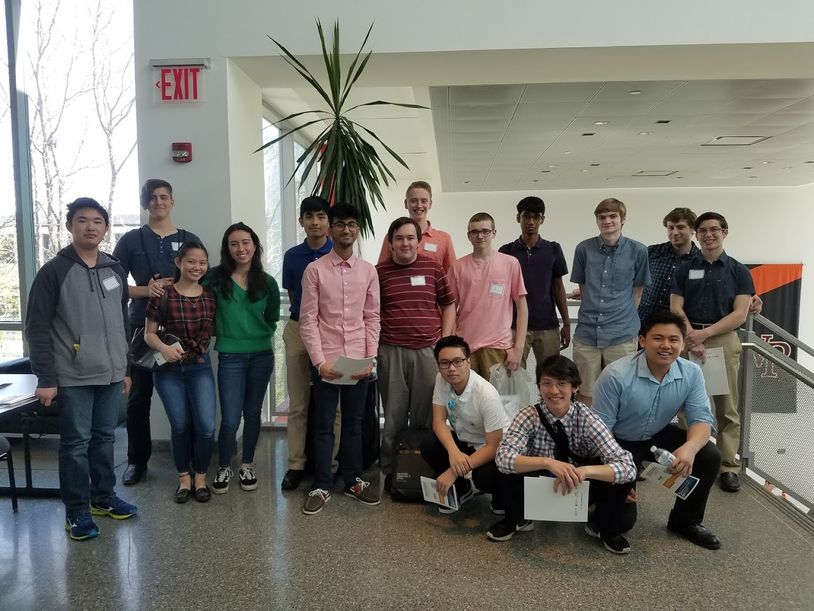
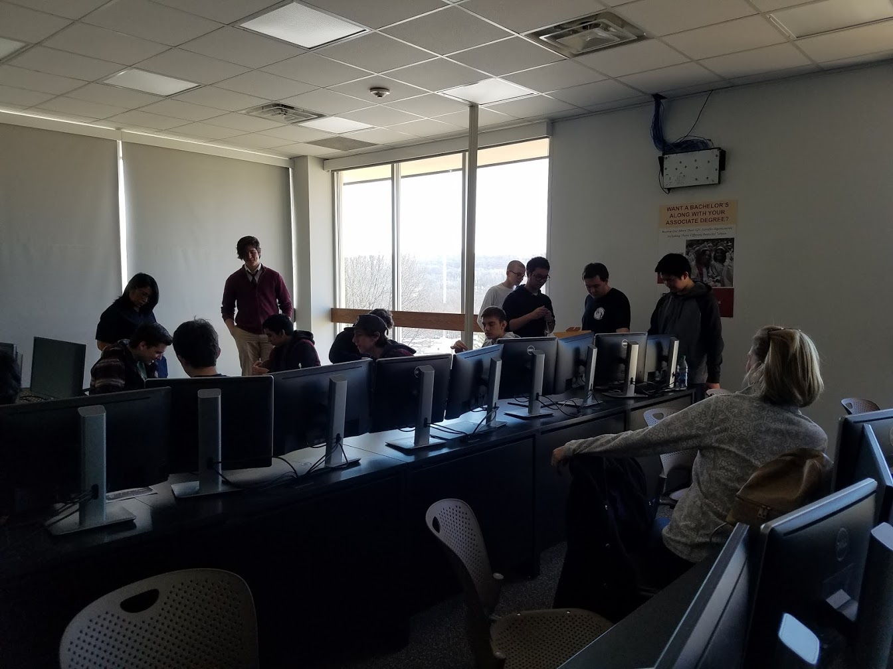
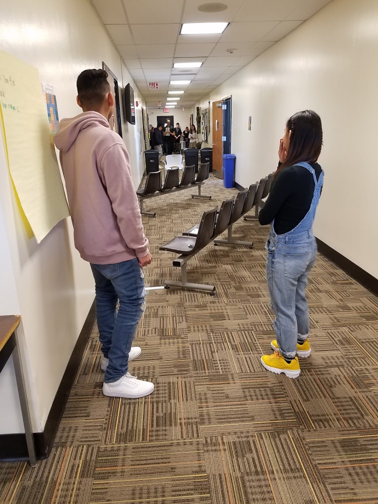
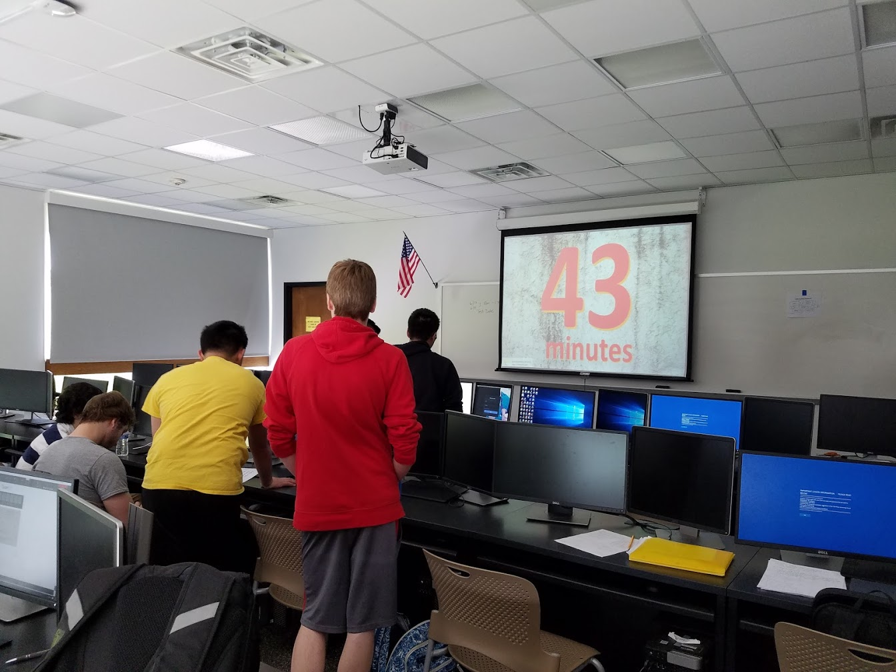
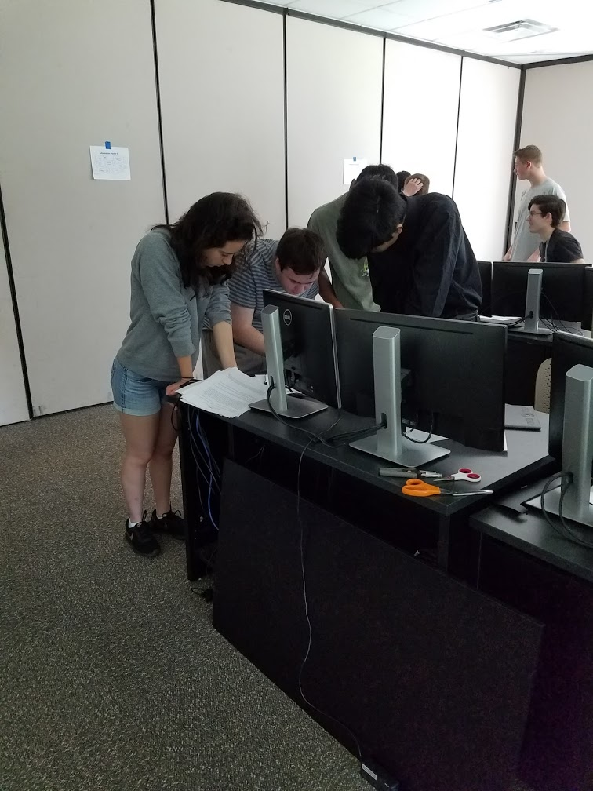
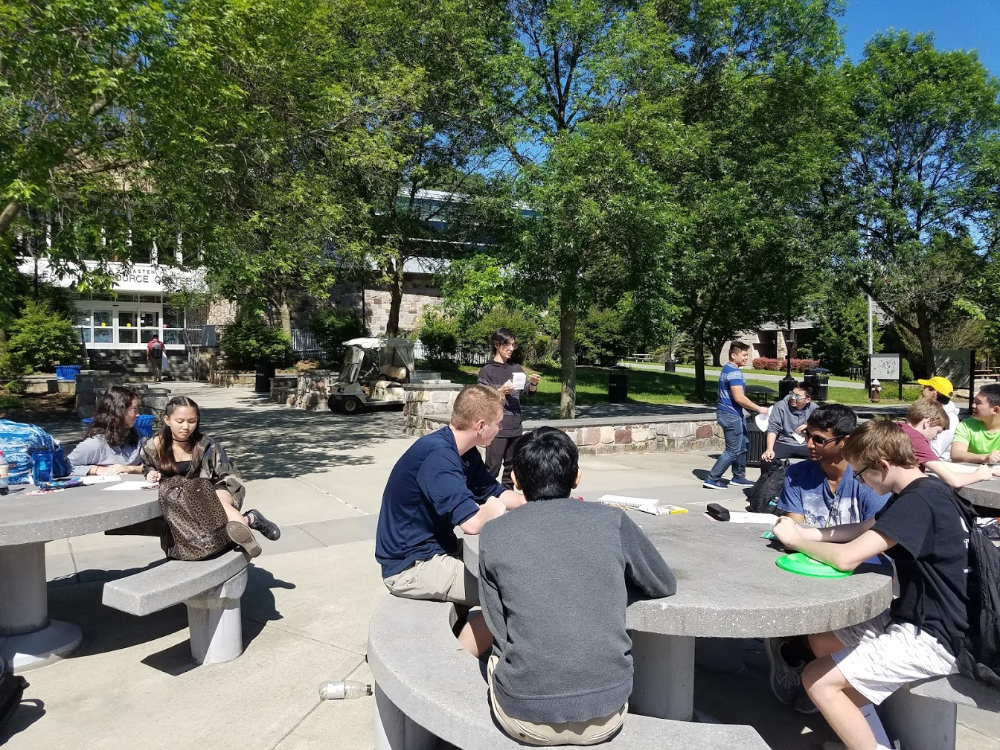
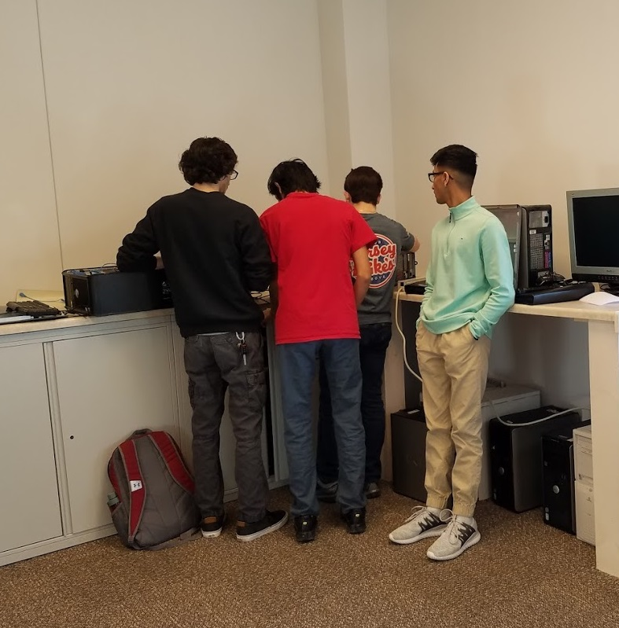
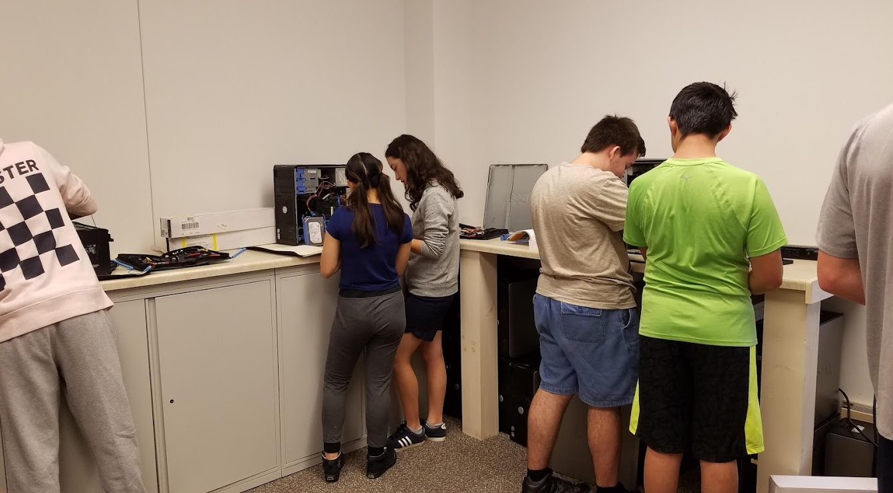
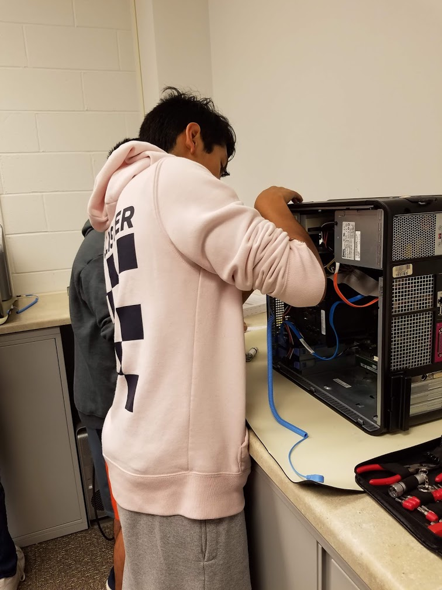
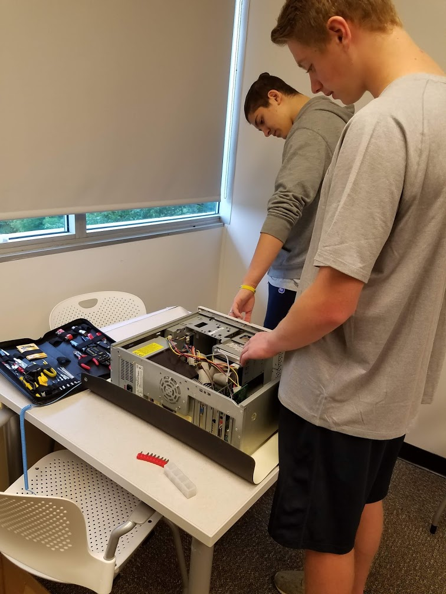

CSIP @ William Patterson University
In April of 2019, our CSIP class travelled to William Patterson University for their 5th Annual Cyber Security and Big Data Analytics Symposium. We learned a variety of cyber-related topics such as encryption, cryptocurrency, and ransomware.
CSIP Open House Workshops
Our CSIP class put together workshops for interested students to try out, we had a lot of guests and a lot of fun with various activities like cable making, Java programming, and a human-program activity.
Students created wires and tested them with Raspberry Pis.

Students led a blindfolded classmate in a human-programming activity.
CSIP "Hack It" Challenge
Our class was challenged to "Hack" a system via an online lab. We were given limited time and no other information besides lab material. The challenge tested our problem solving skills with encryption puzzles and more.

CSIP Outdoor Bingo @ CCM
To study for our final exams, we were given the opportunity to have fun and study with bingo outside.
CSIP IT Labs
The IT lab at CCM provided us with a lot of computers and tools we need to have a hands-on experience with computer building and repairing. Many of the computers in the lab were previously broken, and were fixed by our class.


